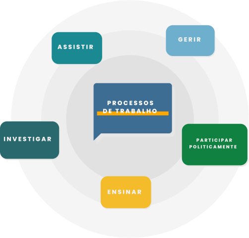

TÓPICO 2
TRABALHO DO GESTOR DA ATENÇÃO PRIMÁRIA À SAÚDE
TÓPICO 2
TRABALHO DO GESTOR DA ATENÇÃO PRIMÁRIA À SAÚDE
Assim, para melhor compreender as práticas inerentes ao trabalho dos gerentes da APS, orientados pelo seu processo de trabalho, podemos tomar as atividades sobre diferentes dimensões (SACRAMENTO, 2020; BORGES, TRINDADE, 2021).
Clique sobre cada dimensão para conhecê-la.
ASSISTIR
Resolução das necessidades de indivíduos e comunidades.
x
GERIR
Gestão do trabalho, com foco no desenvolvimento, na implantação de condições para a concepção e a execução da assistência e no desenvolvimento de estratégias adequadas às necessidades da equipe e à finalidade do trabalho.
x
PARTICIPAR POLITICAMENTE
Intervenção no domínio político, recorrendo ao conhecimento e às habilidades que culminem na melhoria das condições de trabalho, na obtenção de resultados mensuráveis e nos cuidados seguros e de qualidade.
x
ENSINAR
Aplicação do processo de ensino-aprendizagem, incluindo diferentes atores, tais como a equipe, os usuários e o próprio gerente, e viabilizando a educação continuada e permanente dos profissionais da saúde.
x
INVESTIGAR
Realização de investigação sobre a prática clínica e gerencial das equipes, fundamentada nas práticas baseadas em evidências para o uso do pensamento crítico.
x